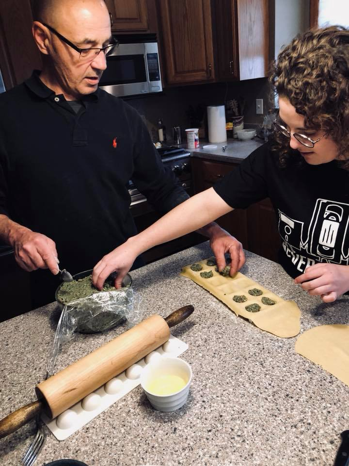

Emily Lupini
Software Engineer | Baseball Enthusiast | Pasta Lover
Lupini
[loo-pee-nee]
Pronounced like: fettuccine, tortellini, bucatini, linguine
I'm a senior Computer Science major at Metropolitan State University of Denver, set to graduate in Spring of 2019. I'm interested in database management, AI, and algorithm design and analysis.
Cooking has always been a big part of my life. My parents are fantastic chefs, and I've been spoiled with good food since I was really young. It's a family tradition in our household to celebrate Christmas Eve with homemade ravioli. My love for pasta definitely came from my Dad and all of our dough-rolling adventures during the holidays. I've embraced all of the food of my Italian ancestors, and am proud to say that I'm a Lupini (pronounced like linguine).

My Skills
Python | C#
Java | SQL
JavaScript | HTML + CSS
Download Resume:
get_appContact Me
placeDenver, CO
email Email: lupini@likelinguine.com